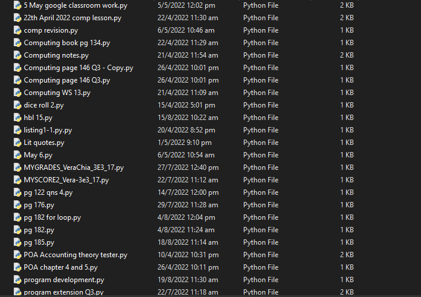
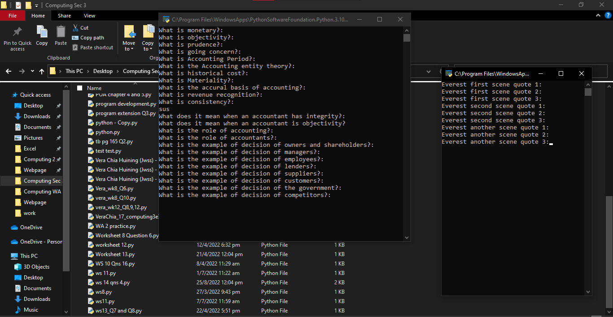

About
I am a sec4 student, currently studying at Jurong West Secondary School. The school offered computing as a subject, and i knew that i had to take up that opportunity to pursue my interest.
To be honest, my curiosity started from watching movies when i was younger. I have always thought that hackers were very cool in those shows, and that the other characters would not have succeeded without them.
When i grew older, i cared more about what technology is capable of, being afraid of being a victim of these hackings. I wondered about how i could protect myself from such happenings.
I started to get interested in programming, with a goal of eventually learning about offensive and defensive hacking. Taking Computing as a subject also helped boost my love for programming.

We learned python with IDLE, and Excel functions.
After taking computing as a subject, i was always particularly interested in the practical part of programming.

In sec 3, when i was new to programming, i would make really simple random programmes to help me study with other subjects. I found that programming was such a useful tool, making me even more curious about programming.
When it comes to computing, i have always given in my best for good results. For the latest Weighted Assigment 2, i have gotten A1 (78). In 2022, i have achieved A1 (85) for my end of year result, and my overall result was also an A1 (84).